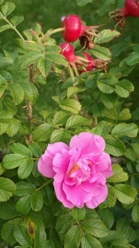
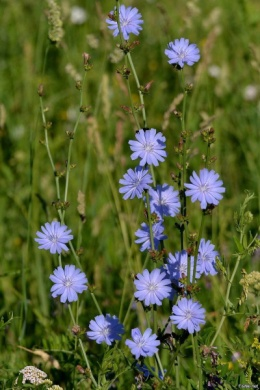
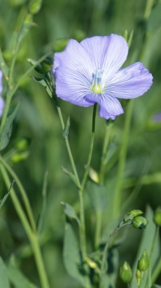

Травы – группа растений, листья, стебли, корневища, плоды и семена которых служат сырьем для производства лечебных средств. Состоянием на 2010 год, Международный союз охраны природы зафиксировал 21 000 видов, предоставляющих ценность для здоровья человека. Классификация лекарственных трав по свойствам:
1. Мягчительные (аррорут, лен, солодка, исландский мох, сальный корень).
2. Грудные или пекторальные (волосатик, белокопытник, девясил, мята, побеги ели).
3. Одуряющие или наркотические (мак, конский укроп, аконит, наперстянка).
4. Противоспазматические (мелисса, липа, вишневый лавр, пион, валериана).
5. Рвотные (ипекакуана).
6. Послабляющие (ревень, цикорий, вьюнок, безвременник).
7. Возбуждающие (чеснок, анис, бадьян, корица, розмарин, шалфей, ромашка, хрен, тмин, гвоздика, ваниль).
8. Вяжущие (черемуха, черника, айва, шиповник, василек).
9. Тонические (какао, хмель, чертополох, корень горечавки, остролист).
10. Потогонные (репейник, бузина, вяз, змеевик).
11. Мочегонные (солодка, петрушка, одуванчик, первоцвет).
12. Освежающие, ослабляющие, противовоспалительные (щавель, солодка, палечная трава).
13. Глистогонные (пижма, лук, папоротник, лапушник).
14. Противозолотушные (орешник, хина, кресс-салат). О целебной силе растений известно еще с XXI века. С древних времен и по сей день они широко используются в народной, традиционной медицине для профилактики, лечения болезней пищеварительного тракта, половых органов, сердца, нервной, эндокринной систем, устранения инфекций.
Свойства: – утоляют боль; – снимают раздражение, воспаление, спазмы; – нормализуют стул (послабляющий эффект); – придают силу и энергию (возбуждают ЦНС); – сжимают ткани нашего тела (вяжут); – укрепляют иммунитет; – увеличивают работоспособность; – регулируют артериальное давление (разжижают кровь); – улучшают сон (успокаивают нервную систему); – облегчают проявления климакса (у женщин). На основе лекарственных трав готовят настои, декокты, сиропы, таблетированные и капсулированные препараты, порошки, примочки. На человеческий организм они действуют значительно мягче, чем синтетические медикаменты. Кроме того, травы (базилик, чеснок, укроп, мята) используют в кулинарии для улучшения вкуса блюд и в религиозных обрядах. Помните, все растения – это сильнейшие аллергены, поэтому применять их следует с осторожностью, чтобы не нанести вред здоровью.
  